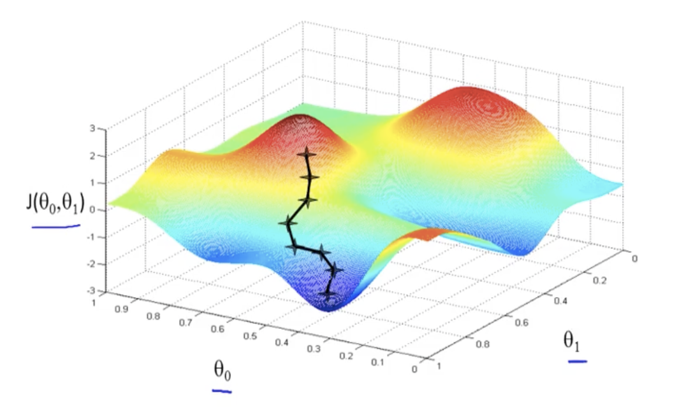

Gradient Descent is a methodology to tune parameters to minimize loss functions for machine learning. If you don’t know what a loss function is, you can read my article on loss functions here.
This article will how and why gradient descent works; to follow along, you should know what a gradient is (duh). If you don’t, give this article a read.
How gradient descent works
Gradient descent can be summarized into the following steps:
- Choose initial values of parameters \((\theta = \{\theta_0, \theta_1, \dots, \theta_d\} \in \mathbb{R}^{d+1})\)
- Step into the opposite direction of the gradient of the loss function by a factor of the learning rate: \[\theta_j \leftarrow\theta_j-\alpha \frac{\partial J(\theta)}{\partial\theta_j}\qquad \forall j =0\dots d \quad \text{simultaneously}\]
- Repeat unitl convergence (when the Euclidian norm between updated parameters converges: \(\|\theta_\text{new}-\theta_\text{old}\|<\epsilon\) for some \(\epsilon\))
A lot of notation; kinda confusing. In human language, here is what happens:
- Start off with a set of parameters.
- Repeat the following steps until the parameters don’t change much:
- Calculate the gradient of the loss function with respect to each parameter
- Move the parameters in the opposite direction of the gradient by a factor of the learning rate
Note: The learning rate \(\alpha\) is a hyperparameter that controls how big the steps are. I will cover it in following sections, but to learn about hyperparameters in general, click here.
It almost seems magical that this simple procedure can find the minimum of a loss function. To figure out why this works, we need to figure out what exactly moving in the opposite direction of the gradient means.
Why gradient descent works
Imagine you are a hiker on a mountain that wants to find the lowest point. To get to the lowest point as quickly as possible, you probably want to walk in the direction of steepest descent.
However, since a mountain is irregular, the direction of steepest descent is not always the same. Therefore, you will have to take a small step, recalculate the direction, take another small step, and so on. Eventually, you will find the lowest point.

This is exactly what gradient descent does. It takes small steps in the direction of steepest descent until the cost function is minimized.
In other words, moving in the opposite direction of the gradient is equivalent to taking a step in the direction of steepest descent. This can be proven if we prove that the gradient is the direction of steepest ascent. In the following section, I will present a proof that works for any dimension; feel free to skip it if you are not interested.
Proof: The gradient is the direction of steepest descent
Suppose \(f(x,y)\) is differentiable at \((x,y)\), \(\nabla f(x,y) \ne \vec{0}\), and \(\vec{u}\) is a unit vector. The directional derivative of \(f\) in the direction of \(\vec{u}\) can be calculated as follows: \[{D_{\vec u}}f\left( {x,y} \right) = \nabla f \cdot \vec{u}\]
We can decompose the dot product into the following: \[\begin{align} {D_{\vec u}}f\left( {x,y} \right) &= \nabla f \cdot \vec{u} \\ &= \|\nabla f\|\|\vec{u}\|\cos{\theta} \\ &= \|\nabla f\|\cos{\theta}. \end{align}\] Since \(-1 \le \cos{\theta} \le 1\), the directional derivative, or the rate of change of \(f\), is maximum when \(\theta = 0\), which is when it points in the same direction of \(\nabla f. \qquad \square\)
Learning rate
As mentioned earlier, \(\alpha\) is the learning rate, a hyperparameter that controls how big the steps are. To see why it matters, let’s go back to the hiking analogy.
If the hiker takes too many steps in one direction before recalculating the gradient, he or she might continuously overshoot the lowest point. If the hiker takes too few steps, he or she might never reach the lowest point in time.

Likewise, if the learning rate is too big, the parameters might be adjusted too much, missing the minimum of the loss function. If the learning rate is too small, the parameters will be adjusted too little, and the algorithm will take too long to converge.
Types of Gradient Descent
There are two types of gradient descent: batch gradient descent and stochastic gradient descent. Then there is a hybrid of the two called mini-batch gradient descent.

To make the explanation easier, I will use the following notation:
Given that there are \(n\) examples in our training data, let \(\ell(x^{(i)}, y^{(i)}, \theta)\) be the loss of one example \((x^{(i)}, y^{(i)})\) of the training data. Then, \[J(\theta) = \frac{1}{n}\sum^n_{i=1}\ell(x^{(i)}, y^{(i)}, \theta).\]
Batch Gradient Descent
Batch gradient descent is the most straightforward way to implement gradient descent. It averages the gradient over entire (or “batches” of the) dataset: \[\theta \leftarrow \theta - \alpha \nabla_\theta J(\theta)\]
Here are some pros and cons of batch gradient descent:
Pros: - Guaranteed to converge to the global minimum (given enough time) - Easy to implement
Cons: - Slow to converge - Requires a lot of memory
Stochastic Gradient Descent
Stochastic gradient descent (SGD) is the opposite of batch gradient descent. Instead of averaging the gradient over the entire dataset, it updates the gradient for every example (iterate over \(i = 1, 2, \dots, n\)): \[\theta \leftarrow \theta - \alpha \nabla_\theta \,\ell(x^{(i)}, y^{(i)}, \theta)\]
Comparison of Batch and Stochastic Gradient Descent
| Batch | Stochastic | ||
|---|---|---|---|
| Pros | - stable convergence and error - exploits hardware optimized for matrix computations - more direct path is taken towards the minimum |
- scalable to large datasets - memory efficient - computationally cheap to calculate gradient - implicit regularization |
|
| Cons | - computationally expensive to calculate gradient - memory intensive |
- high noise in gradient - many updates before convergence - cannot exploit optimized matrix operations |
Mini-batch Gradient Descent
MBGD is a compromise between the above two variations. It has the advantages of both stochastic and batch gradient descent, hence is used most often in practice. It samples a batch of \(B\) points \(D_B\) at random from the full dataset \(D\) without replacement: \[\theta \leftarrow \theta - \alpha \frac{1}{B}\sum_{\left(x^{(i)},y^{(i)}\right)\in D_B} \nabla_\theta \,\ell(x^{(i)}, y^{(i)}, \theta)\] When \(B=1,\) MBGD is just stochastic gradient descent; when \(B=n\), it is batch gradient descent.
Closing Thoughts
Gradient descent is a very powerful technique that is used in many machine learning algorithms. I hope this post has helped you understand it better. If you have any questions or comments, please leave them below. Thanks for reading!